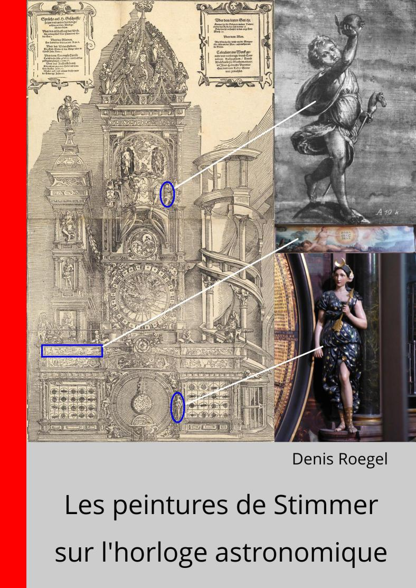

Les peintures de Tobias Stimmer
sur l'horloge astronomique
J'ai profité de l'exposition
consacrée à la Renaissance 1560-1600 à Strasbourg
par les musées de Strasbourg pour achever mon étude sur
les peintures de l'horloge astronomique de la cathédrale
de Strasbourg.
Denis Roegel : Les peintures de Tobias Stimmer
sur l'horloge astronomique de la cathédrale de Strasbourg, 2024,
748 pages et plus de 500 illustrations. (version préliminaire actuelle -0.8)
(75 Mo au total)
Cet ouvrage a été publié pour la première fois le 31 janvier 2024
et est uniquement disponible hors commerce.

Il se compose des parties suivantes :
- Introduction générale (pages 1-18)
- Les peintures de Stimmer sur l’horloge (Stolberg, 1898)
(pages 19-160)
- Le contexte artistique de Stimmer (pages 161-194)
- Les sources de Stimmer (pages 195-628) :
- La création d'Ève (pages 197-228)
- L'eschatologie (pages 229-322)
- Grisailles (pages 323-426)
- Éléments sculptés (pages 427-482)
- Les peintures de la tourelle des poids (pages 483-522)
- Les éléments astronomiques et calendaires (pages 523-628)
- Conclusion (page 629)
- Bibliographie (pages 631-706)
- Annexes (pages 707-734)
Documents complémentaires :
Historique des versions :
- La première version préliminaire (-1) a été mise en ligne
le 31 janvier 2024. Cette première version est conservée ici
pour mémoire, à titre de comparaison avec les suivantes.
Elle a été réalisée sans connaissance du contenu de l'exposition
dont le vernissage a eu lieu le 1er février 2024.
- La version préliminaire (-0.9) a été mise en ligne
le 15 février 2024. Elle complète la version -1 par des illustrations
de toutes les grisailles (photographiées à l'exposition),
et de toutes les statuettes (aussi photographiées à l'exposition).
Elle tient aussi compte du catalogue de l'exposition et corrige
diverses coquilles (notamment toutes celles de l'errata
en date du 15 février).
- La version préliminaire (-0.8) a été mise en ligne
le 18 mars 2024. Elle complète la version -0.9 par des détails
des grisailles, notamment des coutures, des pièces rapportées,
etc. Elle propose une hypothèse de reconstitution de la forme
originelle des grisailles de Stimmer qui n'avait jamais été
envisagée à ce jour, où l'ordre des chars n'est pas celui
présenté à l'exposition de 2024.
Elle comporte aussi des compléments sur les statuettes
exposées en 2024. Enfin, il s'agit de la première version
où toutes les sources astronomiques de Dasypodius sont données,
ce qui n'avait jamais été fait à ce jour.
Pour me contacter : utilisez l'adresse obtenue en prenant notre nom
de famille seul, suivi de la première lettre du mot « contact » apparaissant deux fois
dans ce mot, suivi de l'extension du service de mail de Google.
Dernière modification : 21 mars 2024.